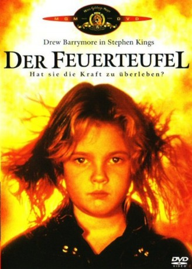

#5174 Der Feuerteufel
Alternativ: Firestarter
 
 IMDB-Wertung: 6.0 / 10
IMDB-Wertung: 6.0 / 10  Metascore: 0
Metascore: 0 
Andy und Vicky lernen sich an der Universität kennen, wo sie beide als Versuchskaninchen an einem Experiment teilnehmen, bei dem sie eine Chemikalie namens "LOT-6" schlucken. Sie heiraten und bekommen eine Tochter, Charlie. Bei Charlie wirkt sich die mysteriöse Chemikalie in der Art aus, dass sie mit ihren Gedanken Feuer legen kann. Der Geheimdienst, der seinerzeit das Experiment durchführen ließ, möchte nun die gesamte Familie beseitigen. Aber man hat die Rechnung ohne die feurige Charlie gemacht.
Jahr: 1984
Dauer: 109 Minuten
FSK: 16
Land: USA Studio: Universal PicturesTonspuren: DD2.0 - ,
Untertitel: Englisch,
Auflösung: 720p (1280x546) Größe: 3297 MB
Genre: Action, Thriller, Horror, Sci-Fi
Regisseur: Mark L. Lester
Drehbuch: Matt Greenberg
Soundtrack:
Darsteller:
 David Keith als Andrew 'Andy' McGee
David Keith als Andrew 'Andy' McGee Drew Barrymore als Charlene 'Charlie' McGee
Drew Barrymore als Charlene 'Charlie' McGee Freddie Jones als Doctor Joseph Wanless
Freddie Jones als Doctor Joseph Wanless- Heather Locklear als Victoria 'Vicky' Tomlinson McGee
 Martin Sheen als Captain Hollister
Martin Sheen als Captain Hollister George C. Scott als John Rainbird
George C. Scott als John Rainbird- Art Carney als Irv Manders
 Louise Fletcher als Norma Manders
Louise Fletcher als Norma Manders Moses Gunn als Doctor Pynchot
Moses Gunn als Doctor Pynchot Antonio Fargas als Taxi Driver
Antonio Fargas als Taxi Driver Drew Snyder als Orville Jamieson
Drew Snyder als Orville Jamieson- Dick Warlock als Knowles
 Jeff Ramsey als Steinowitz
Jeff Ramsey als Steinowitz- Jack Magner als Young Serviceman
- Nina Jones als Grad Assistant
- Steve Boles als Mailman
 Robert Miano als Blinded Agent
Robert Miano als Blinded Agent Leon Rippy als Blinded Agent
Leon Rippy als Blinded Agent- John Sanderford als Albright
 George P. Wilbur als DSI Orderly
George P. Wilbur als DSI Orderly- Curtis Credel als Bates
- Keith Colbert als Mayo
- Lisa Anne Barnes als Serviceman's Girlfriend
- Larry Sprinkle als Security Guard
- Cassandra Ward-Freeman als Woman in Stall
- Scott R. Davis als Bearded Student
- William Alspaugh als Proprietor
- Laurens Moore als Old Man
- Anne Fitzgibbon als Old Lady
- Stanley Mann als Motel Owner
- Carole Francisco als Joan Dugan
- Wendy Womble als Josie
- Etan Boritzer als DSI Technician
- Joan Foley als DSI Technician
- Orwin C. Harvey als DSI Orderly
- Carey Fox als Agent Hunt
Datei: X:\Person\Stephen King\Feuerteufel, Der (1984, FSK16, 1280x546).mkv seit 28.12.2016
Festplatte: HD Collection-7+mehr(A-Z)+Person
 Es gibt insgesamt 44 Filme in der Gruppe 'Person\Stephen King'
Es gibt insgesamt 44 Filme in der Gruppe 'Person\Stephen King'